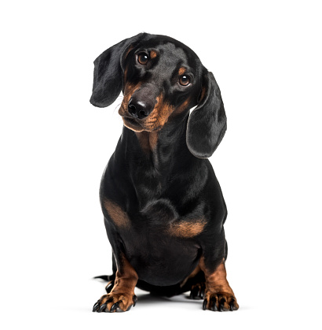
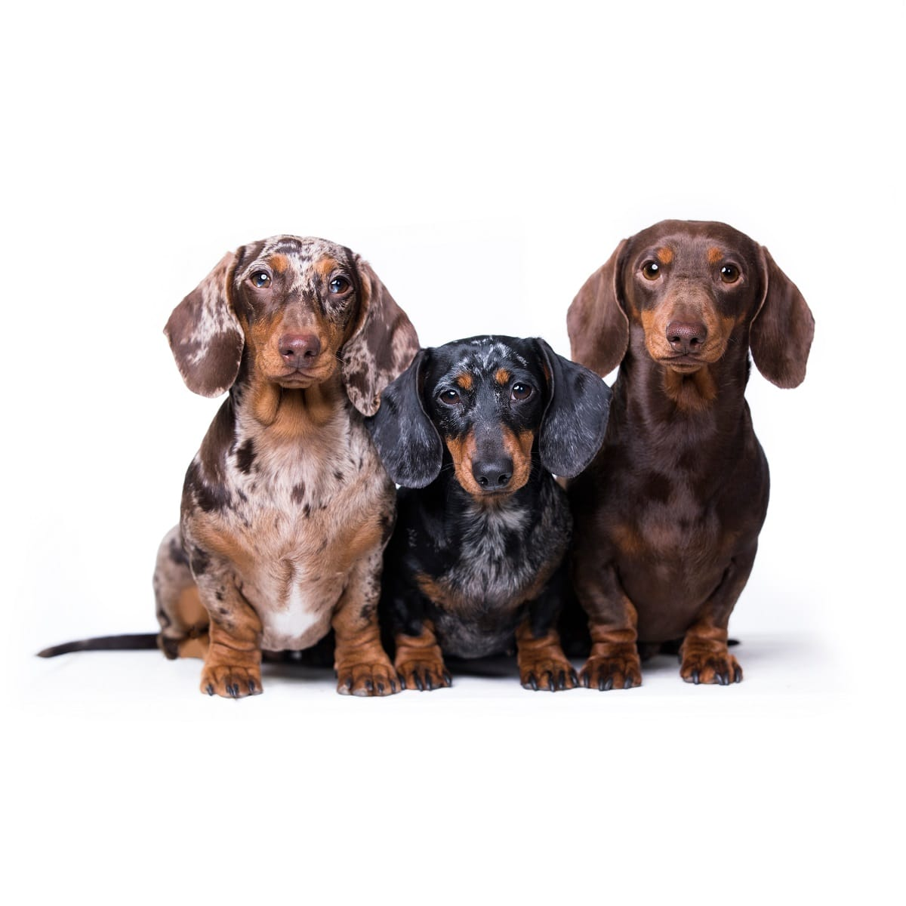
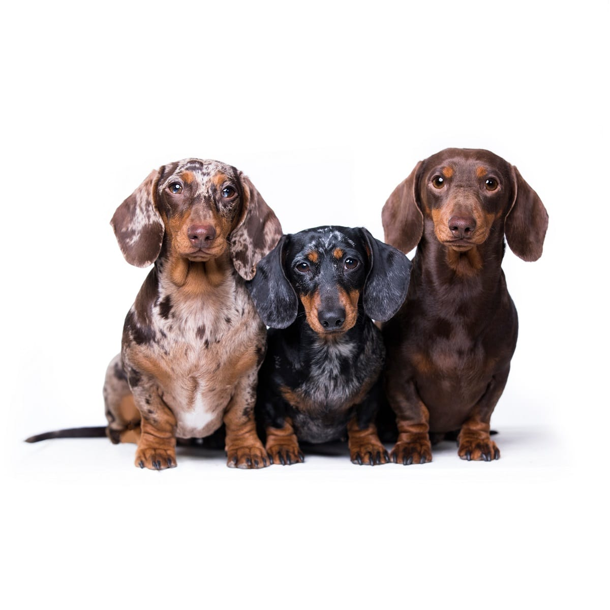

Raça Daschund ou "salsichinha"
Algumas curiosidades
Dachshund ou Teckel: muitos são os nomes que definem essa raça de cães. Bem agitados e cheios de energia, os cães salsicha são conhecidos por terem o corpo alongado e patas curtas. Eles tornam qualquer brincadeira mais animada, pois amam diversão e se dão super bem com crianças. A fama de bagunceiro que acompanha a raça Dachshund até tem um fundo de verdade, mas uma coisa é inevitável: o cachorro que parece salsicha certamente vai te conquistar e se tornará seu melhor amigo em pouco tempo. Se você tem curiosidade para saber tudo sobre a raça salsicha, esse momento é seu. O Patas da Casa preparou um guia completo para você conhecer as principais características, cuidados e comportamentos do cachorro salsicha. Vem com a gente!Raça Teckel, Dachshund ou Dackel: por que existem tantos nomes para os cães salsichas?
Já se perguntou qual o nome da raça do cachorro salsicha? Pois então chegou a hora da verdade: o nome oficial desse doguinho tão carismático é Dachshund. No entanto, é bem provável que você o conheça por outros nomes - ou pelo menos já tenha ouvido outras formas de chamá-lo por aí. Lá fora, por exemplo, ele também é conhecido como Dackel ou raça de cachorro Teckel, nomes que eram muito utilizados principalmente por caçadores alemães e predominam na Europa. Além de Teckel, cachorro também pode ser chamado simplesmente de “cachorro salsicha” ou “salsichinha”, por causa da semelhança do seu corpo com o alimento.Semelhanças entre raças
Apesar da semelhança em alguns aspectos, Basset e Dachshund não se tratam da mesma raça de cachorro. Em alguns casos, é possível encontrar as pessoas chamando a raça de “Basset Arlequim”, mas esse é um termo que não existe. Mesmo com as semelhanças físicas, eles possuem um temperamento bem diferente e estão longe de pertencer ao mesmo grupo de cães. Os Dachshunds costumam ser mais agitados e expressivos, enquanto os Basset Hound são pura tranquilidade. Aqui no Brasil, é comum que existam muitos vira-latinhas que derivam do cruzamento de raças como o Pinscher com Basset. Características físicas desses cães lembram bastante o salsichinha, mas eles não são uma raça pura como o Dachshund e ambos têm personalidades distintas. Outro cão que costuma ser confundido com o Dachshund é o Cocker Spaniel, embora haja pouquíssimas semelhanças entre eles.Cachorro Dachshund: qual a origem da raça salsicha?
Evidências demonstram que a raça de cachorro Dachshund surgiu na Alemanha durante o século 15, no período da Idade Média. Esses cães eram utilizados originalmente para caçar texugos, por causa do seu tamanho, agilidade e faro aguçado. Com o passar dos anos, o cachorro salsicha ganhou popularidade e se tornou um perfeito cão de companhia. Eles quase chegaram a ser extintos após as duas guerras mundiais, mas logo a raça Dachshund conseguiu ser preservada.
Origem da raça
de ter uma origem bem definida, também especula-se que esses cãezinhos existiam muito antes da Idade Média, ainda na época do Antigo Egito, devido a referências encontradas de cachorros muito semelhantes ao Dachshund. No entanto, não há nenhuma comprovação científica desta suspeita.
Principais caracteristicas
Conheça as principais características físicas do cachorro salsicha Reconhecer um cão Dachshund não é nada difícil. É conhecido por aí como raça salsicha ou linguicinha pelo formato do corpo mais comprido e perninhas bem curtas. É um cachorro pequeno, mas com porte atlético e muita disposição. Sabe o tamanho e peso do salsicha? Raça costuma medir entre 20 e 30 cm, e pesar de 3 a 9 kg.
Chamado de Dachshund ou Teckel, cachorros da raça são excelentes farejadores devido ao seu focinho mais alongado. Além disso, os salsichinhas carregam um outro traço muito marcante, que é o seu olhar sempre atento e curioso. Por isso, uma coisa é certa: a raça de cachorro salsicha está sempre de olho em tudo que acontece à sua volta - e é por isso que eles são bem protetores com seus tutores.
Tipos de cachorro Dachshund: quais as variações da raça?
O Dachshund é uma raça que pode apresentar até três tipos de pelagem: curta, dura e longa. Além disso, a coloração pode ser mais uniforme, bicolor e até manchada. Uma forma comum é a pelagem do Dachshund arlequim ou, como alguns chamam erroneamente, “Basset arlequim”: características que definem esse cãozinho são os pelos com uma base escura e manchas mais claras.
Além das diferenças na pelagem, o Dachshund também pode ser classificado de acordo com o seu tamanho, que é definido pela circunferência do tórax. Nesse caso, deve-se medir do ponto mais alto na altura da cernelha ao ponto mais baixo do peito. As variações da raça salsicha seguem o seguinte padrão:
Variações
•Dachshund standard: é um cachorro salsicha “grande”, com faixa de peso de 8 a 10 kg e caixa torácica entre 35 e 45 cm de peito;
•Dachshund miniatura: é um cachorro salsicha “médio”, com faixa de peso de 5 a 7 kg e caixa torácica entre 32 e 35 cm de peito;
•Dachshund kaninchen: é um cachorro salsicha “pequeno”, com faixa de peso abaixo de 5 kg e caixa torácica até 32 cm de peito;
.jpg) 
